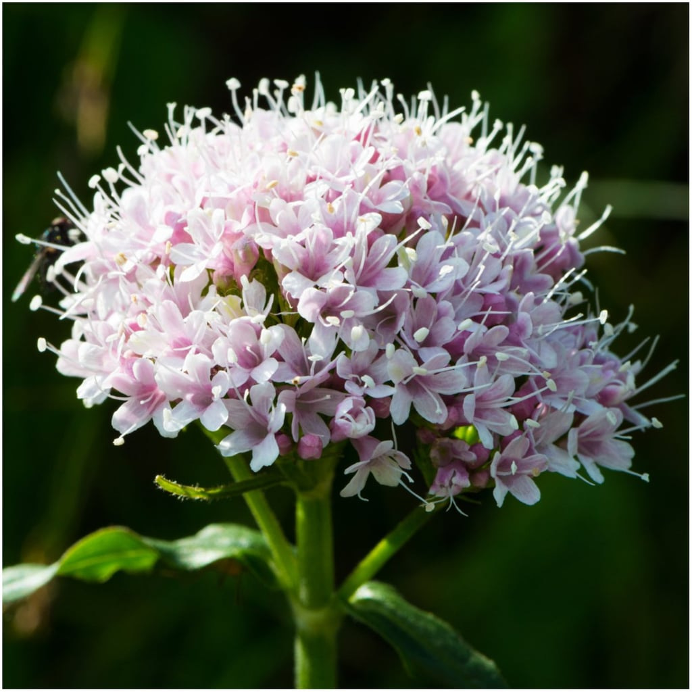

- Scientific Name: Actindidia polygama
- Not addictive to cats
- Can be used for insect repellent

- Scientific Name: Nepeta
- Same genus as catnip, NOT the same thing
- 50 different kinds of catmint
- Easy to grow

- Scientific Name: Lonicera tatarica
- Don't randomly pluck honeysuckle out in wild to give to your cats - some honeysuckle types are TOXIC

- Scientific Name: Valeriana officinalis
- Cats are effcted by both smells and consumption
- Can act as a sedative
- DON'T use human-grade valerian powder because it could have other ingrediants that are unsafe for your cat